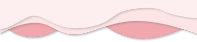
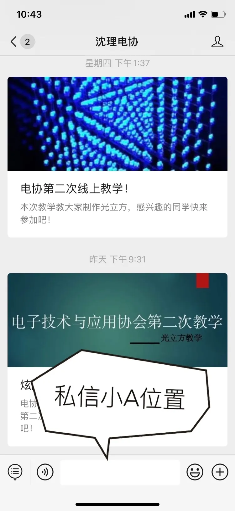
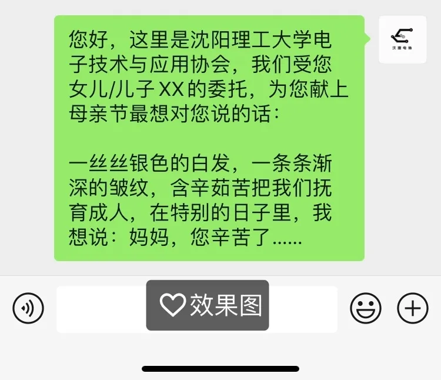
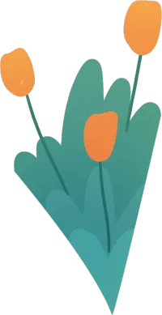
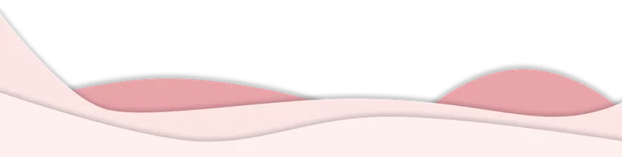
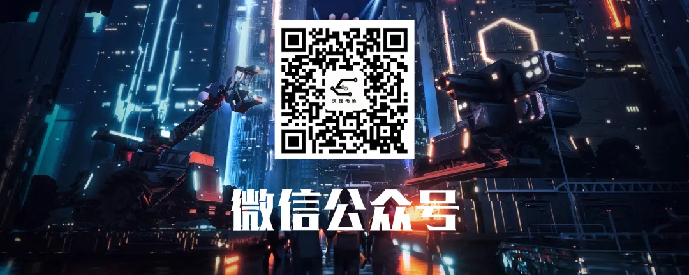

使用小程序

感 恩 母 亲 节
听说神无处不在 所以创造了妈妈
你有没有一些想对妈妈说却又开不了口的话
5月10日 小A来帮你转达~
母亲节特别活动
未曾说出口的爱与感谢，我们来帮你传达于妈妈~
私信留下姓名和母亲的联系方式
评论区留下想对母亲说的话（可选择文章后方文案 可自定义）


以下文案可供选择（评论留下序号即可）
亲爱的母后 母亲节快乐🎉
感谢您不是超人 却为我变成了万能♥
母上大人
生日快乐♪٩(´ω`)و♪
感谢您做我的妈妈
这是我此生最大的幸运与福气
上帝无处不在 所以创造了妈妈🎀
不只是今天 每一天都很爱您
过去你扶我蹒跚学步
未来我陪你夕阳漫步
愿岁月从不败我的美人妈妈💃
亲爱的妈妈，岁月已将您的青春燃烧，但您的关怀和勉励将伴我信步人生。用我心抚平你额上的细纹，用我的情感染黑您头上的白发。祝您母亲节快乐！
M--O--T--H--E--R
M--make
你创造了一切
O--only
一切只是为了我们
T--tender
你是我们温柔的港湾
H--happy
我们快乐是你最大的希望
E--ever
你对我的爱是永远不变化的
R--recall
儿女又一次想起了你
保证书：亲爱的妈妈，母亲节到来之际，我向您保证以后赚了钱一定给您买最好的化妆品最名牌的时装，愿妈妈青春永驻！我爱你~
一丝丝银色的白发，一条条渐深的皱纹，含辛茹苦把我们抚育成人，在特别的日子里，我想说：妈妈，您辛苦了……
自定义（说出你最想说的心里话）
爱要大声说出来
祝 | 天 | 下 | 母 | 亲 | 节 | 日 | 快 | 乐


排版 | 杜遇涵
策划 | 信息部
